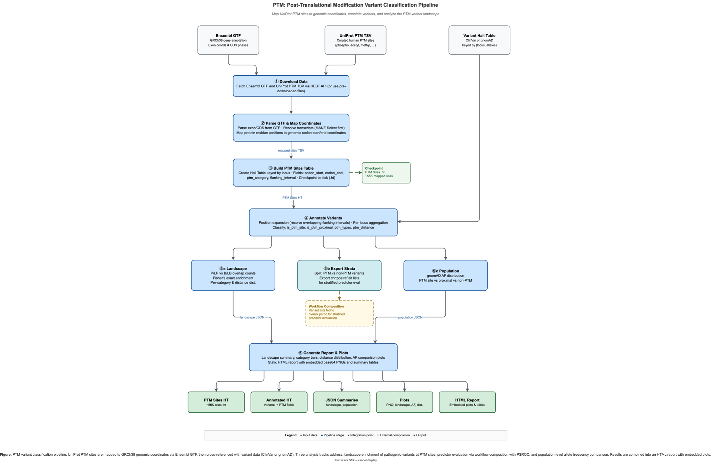

PTM variant classification¶
hvantk ptm places post-translational modification (PTM) sites on their GRCh38 codons,
classifies variants by where they fall relative to those codons, and analyzes the
classes. This page covers the sites table, the classification and every subcommand
except constraint, which has its own page: PTM constraint. For a
run from start to finish, see the PTM example.

Figure 1. From UniProt sites and the Ensembl GTF to the sites table, the variant
annotation, the landscape, strata and population analyses, and the report. test and
constraint are not drawn.
| Command | What it does | Writes |
|---|---|---|
build |
Maps UniProt PTM sites, plus optional PeptideAtlas and CPTAC phosphosites, to GRCh38 codons | Sites Hail Table, mapped TSVs |
annotate |
Adds the PTM fields to a variant table | Hail Table |
landscape |
Compares ClinVar P/LP and B/LB variants at and near PTM sites | JSON, PNGs |
population |
Summarizes allele frequency by PTM class | JSON, PNG |
export-strata |
Writes PTM and non-PTM variant lists for hvantk psroc |
Two text files |
report |
Renders the landscape and population results as one HTML page | HTML, PNGs |
test |
Fits a mixed model of allele frequency on PTM status in each stratum | TSV |
constraint |
Allele-frequency depletion by tissue or cell type, see PTM constraint | TSVs, PNGs, HTML |
Requirements¶
build,annotate,landscape,populationandexport-strataneed only the base install; they run on Hail.builddownloads from UniProt and Ensembl unless you pass local files.report, and--save-plotsonlandscapeandpopulation, need matplotlib, which thevizextra installs.testandconstraintneed theconstraintextra. Without statsmodels,teststops with a message that names it.- CPTAC sites come from
hvantk download cptac-phospho, which needs theptmextra.
Installation lists the extras.
How variants are classified¶
annotate compares each variant's position with every codon in the sites table.
landscape and population run the same step on their input table.
- A site occupies its codon: the three bases from
codon_start. A codon split by an intron is treated as the three contiguous bases fromcodon_start. - The site's window extends
--flanking-codons× 3 bp (default 5 codons, 15 bp) beyond each end of the codon. It is counted in genomic bases, so it can reach into an intron, and it is clipped at the contig ends. - A variant inside any site's codon is a site variant. Otherwise, a variant inside any site's window is proximal. Every other variant is non-PTM. Site takes precedence, so the two flags are never both true.
- Only the position counts: every allele at a position gets the same class.
The variant table needs a GRCh38 locus field (the sites table is GRCh38). annotate
keeps all its fields and adds:
| Field | Type | Value |
|---|---|---|
is_ptm_site |
bool | The variant lies in a PTM codon |
is_ptm_proximal |
bool | The variant lies in a window but in no codon |
ptm_distance |
int32 | Distance to the nearest codon in codons, ceil(bp / 3): 0 in a codon, at most --flanking-codons in a window. Counted in genomic bases, so it is not the residue distance when an intron lies between |
ptm_types |
set\<str> | The ptm_category of every site whose codon or window covers the position, not only the nearest |
ptm_evidence |
array\<struct> | One struct per row of the nearest site or sites, with source_db, evidence_type, n_observations, uniprot_id, gene_symbol, residue_pos, amino_acid and ptm_type. Added only when the sites table has at least one of these fields; a table from build has all of them |
For a non-PTM variant both flags are False and the other three fields are missing.
landscape, export-strata and constraint treat site and proximal variants together
as PTM variants; population reports the three classes separately.
Build the sites table¶
build downloads the UniProt sites and the Ensembl GTF into --output-dir (or reuses
them), maps every site to its codon, and writes the Hail Table with the
uniprot-ptm:sites plugin builder. hvantk reprocess uniprot-ptm:sites builds the same
table from UniProt alone (see Data sources); build is the
command that also adds PeptideAtlas and CPTAC sites.
Sources¶
| Source | How build gets it |
Sites | n_observations |
|---|---|---|---|
| UniProt (always) | Downloads uniprot-ptm-human-<date>.tsv, or takes --ptm-tsv (written by hvantk download uniprot-ptm) |
Modified residue (MOD_RES) features of reviewed (Swiss-Prot) human proteins, on the canonical sequence |
0 |
| PeptideAtlas | --peptideatlas-tsv, written by hvantk download peptideatlas-phospho |
Phosphorylated S, T and Y observed on canonical proteins in one PeptideAtlas build | Observations summed over the phosphopeptide forms that carry the site |
| CPTAC | --cptac-tsv, written by hvantk download cptac-phospho |
Phosphorylated S, T and Y quantified in CPTAC tumor and normal samples; tissue_type is tumor or normal |
Samples with a measured intensity |
The UniProt search endpoint has no versioned archive, so a later download can give a
different table. Keep the downloaded TSV and pass it with --ptm-tsv to rebuild the same
table. A file downloaded the same day is reused.
PeptideAtlas: hvantk download peptideatlas-phospho -o data/ptm/ writes
peptideatlas-phospho-<build_date>-<build_id>.tsv and prints its path. A TSV written by
hvantk before 0.4.0 over-counts n_observations, and the download reuses an existing
TSV, so delete the old file (or pass --overwrite) and download again.
CPTAC: hvantk download cptac-phospho needs --cancer-type or --all. Pass
cptac-phospho-<cancer_type>.tsv (tumor and normal rows) or, after --all,
cptac-phospho-pancancer.tsv. The -tumor.tsv and -normal.tsv files have the same
layout and hold one tissue type each. The -matrix.csv and -metadata.csv files are
for the cptac:phospho dataset, not for build.
Mapping sites to codons¶
Each protein maps through one Ensembl transcript from the pinned GTF
(Homo_sapiens.GRCh38.113.gtf.gz), chosen in this order:
xref_mane: a transcript in the protein's UniProt Ensembl cross-references that is MANE Select.xref_any: the first cross-referenced transcript with a CDS.gene_mane: the MANE Select transcript of the protein's gene symbol.
A protein with no match is unresolved, and its sites fail. PeptideAtlas and CPTAC
rows carry no cross-references, so they map only through gene_mane.
Residue p maps to bases 3p - 2 to 3p of the transcript's CDS, on either strand.
codon_start and codon_end are the lowest and highest genomic positions of those
bases, so a codon split by an intron spans the intron. A residue beyond the end of the
CDS fails. The mapper does not check that the codon encodes the source's amino acid: a
site lands on the right codon only when the source protein sequence matches the
transcript.
Categories¶
ptm_category comes from the start of the site's description (ptm_type):
| Category | Description starts with |
|---|---|
phosphorylation |
Phosphoserine, Phosphothreonine, Phosphotyrosine |
acetylation |
N6-acetyllysine |
methylation |
N6-methyllysine, N6,N6-dimethyllysine, N6,N6,N6-trimethyllysine, Asymmetric dimethylarginine, Symmetric dimethylarginine, Omega-N-methylarginine |
other |
Anything else |
PeptideAtlas and CPTAC sites are all phosphorylation. UniProt records glycosylation,
SUMOylation and ubiquitination as Glycosylation and Cross-link features, which the
download does not fetch, so a table from build never contains them.
Combining sources¶
Each source is mapped on its own, to ptm_sites_mapped.tsv.bgz (UniProt),
peptideatlas_sites_mapped.tsv.bgz and cptac_sites_mapped.tsv.bgz in --output-dir.
With more than one source, build concatenates them into ptm_sites_combined.tsv.bgz
and builds the table from that file. Rows are not merged: a residue reported by two
sources, or by CPTAC in both tumor and normal tissue, keeps one row per report, each
with its own source_db, evidence_type (curated for UniProt, mass_spectrometry
otherwise), n_observations and tissue_type. The classification pools all rows at a
position, so these duplicates change only ptm_evidence.
The sites table¶
The table is keyed by locus, the position of codon_start. Contigs get a chr prefix
(MT becomes chrM), rows on contigs outside GRCh38 are dropped, and several rows can
share a locus. Its fields are chrom, codon_start, codon_end, strand,
uniprot_id (the source's protein accession), gene_symbol, residue_pos,
amino_acid, ptm_type, ptm_category, source_db, evidence_type,
n_observations, tissue_type and flanking_interval (the codon extended by
--flanking-codons × 3 bp). No command reads flanking_interval: annotate,
landscape and population apply their own --flanking-codons.
build prints a summary like this one (Resolution counts proteins, not sites):
Sources: UniProt (<n> mapped), PeptideAtlas (<n> mapped)
Mapping complete: <mapped>/<total> mapped (<percent>%), <failed> failed
Resolution: {'xref_mane': <n>, 'xref_any': <n>, 'gene_mane': <n>, 'unresolved': <n>}
Mapped TSV: data/ptm/ptm_sites_combined.tsv.bgz
Hail Table: data/ptm/ptm_sites.ht
A source that maps no site is logged as a warning; it usually means the wrong file. If
no site maps at all, build exits with an error and writes no table. Without
--overwrite, an existing --output-ht stops the run before anything is downloaded.
| Option | Default | Description |
|---|---|---|
-o, --output-dir |
required | Directory for the downloads and the mapped TSVs |
--output-ht |
required | Sites table to write |
--gtf-path |
download | Ensembl GRCh38 GTF to use instead of downloading Homo_sapiens.GRCh38.113.gtf.gz |
--ptm-tsv |
download | UniProt TSV to use instead of downloading one |
--peptideatlas-tsv |
none | PeptideAtlas site TSV to add |
--cptac-tsv |
none | CPTAC site TSV to add |
--flanking-codons |
5 | Width of the stored flanking_interval, in codons |
--overwrite |
off | Download the GTF and UniProt TSV again instead of reusing them, and replace an existing --output-ht |
Annotate a variant table¶
hvantk ptm annotate \
--variants-ht data/clinvar.ht \
--ptm-ht data/ptm/ptm_sites.ht \
-o data/clinvar_ptm.ht
annotate writes the fields described in
How variants are classified and prints how many variants
are site and proximal variants.
| Option | Default | Description |
|---|---|---|
--variants-ht |
required | Variant Hail Table with a GRCh38 locus field |
--ptm-ht |
required | Sites table from build |
-o, --output-ht |
required | Annotated table to write |
--flanking-codons |
5 | Window beyond each end of a codon, in codons |
--overwrite |
off | Replace an existing output table |
Landscape¶
hvantk ptm landscape \
--clinvar-ht data/clinvar.ht \
--ptm-ht data/ptm/ptm_sites.ht \
-o results/landscape/ \
--save-plots
landscape classifies a ClinVar table (built with hvantk reprocess clinvar:variants,
or any table with info.CLNSIG) and labels each variant by its CLNSIG, taking the
first value when the field is an array:
- P/LP:
Pathogenic,Likely_pathogenicorPathogenic/Likely_pathogenic. - B/LB:
Benign,Likely_benignorBenign/Likely_benign. - Any other value counts only in the total,
n_variants.
It then computes:
- Enrichment: the 2×2 table of P/LP against B/LB variants by PTM (site or proximal) against non-PTM. The odds ratio is scipy's conditional maximum-likelihood estimate with its 95% confidence interval; the p-value is from a two-sided Fisher's exact test.
- Per-category enrichment: for each category in
ptm_types, the same test among PTM variants only, comparing the variants with that category against those without it. A variant with several categories counts in each. - The P/LP count per category and per
ptm_distance(0 means in a codon).
File in -o |
Contents |
|---|---|
landscape_summary.json |
n_variants, n_pathogenic, n_benign; ptm_site and ptm_proximal (P/LP and B/LB counts); enrichment (odds_ratio, ci_low, ci_high, p_value); overlap_by_category; category_enrichment (counts, odds ratio, interval and p-value per category); distance_distribution |
landscape_summary.png |
P/LP and B/LB counts per class with the odds ratio, and the P/LP share per class against the overall rate (--save-plots) |
overlap_by_category.png |
P/LP count per category (--save-plots) |
distance_distribution.png |
P/LP count per distance (--save-plots) |
| Option | Default | Description |
|---|---|---|
--clinvar-ht |
required | ClinVar Hail Table |
--ptm-ht |
required | Sites table from build |
-o, --output |
required | Output directory |
--flanking-codons |
5 | Window beyond each end of a codon, in codons |
--save-plots |
off | Also write the PNG plots |
Population¶
hvantk ptm population \
--gnomad-ht data/gnomad_sites.ht \
--ptm-ht data/ptm/ptm_sites.ht \
--af-field AF \
-o results/population/ \
--save-plots
population classifies a variant table with an allele-frequency (AF) field and
summarizes each class. The option is named --gnomad-ht, but any variant table works.
--af-fieldmust name a top-level numeric field. gnomAD release tables keep frequencies in thefreqarray; copy the entry you want into a top-level field first. A row with a missing value is skipped, not an error: it is excluded from the mean/count statistics and from the kept AF sample used for the plot.- Non-PTM means every other variant in the table. Nothing restricts it to coding positions, so filter the table first if that is the comparison you want.
- For each class it reports the variant count and mean AF, and for site variants the number with an AF of exactly 0. It runs no statistical test.
- It keeps up to 5,000 AF values per class for the plot. These are an arbitrary subset, not a random sample.
File in -o |
Contents |
|---|---|
population_summary.json |
n_variants, n_ptm_site, n_ptm_proximal, n_non_ptm, mean_af per class, n_zero_af_ptm, and the kept values (ptm_site_afs, proximal_afs, non_ptm_afs) |
population_af.png |
The kept AF values per class on a log scale with their medians, and the share below 1e-4 per class (--save-plots) |
| Option | Default | Description |
|---|---|---|
--gnomad-ht |
required | Variant Hail Table with an AF field |
--ptm-ht |
required | Sites table from build |
--af-field |
AF |
AF field name |
-o, --output |
required | Output directory |
--flanking-codons |
5 | Window beyond each end of a codon, in codons |
--save-plots |
off | Also write the PNG plot |
Export strata for psroc¶
export-strata reads a table from annotate and writes ptm_variants.txt (site and
proximal variants) and non_ptm_variants.txt (all others) to -o. Each line is one
contig:pos:ref:alt with the contig as stored (for example chr1) and the first
alternate allele; there is no header. Pass each list to hvantk psroc with --variants
to compare predictor performance between the strata (PS-ROC); the
PTM example runs both.
| Option | Default | Description |
|---|---|---|
--annotated-ht |
required | Table from annotate |
-o, --output |
required | Output directory |
Report¶
hvantk ptm report \
-o results/ptm_report.html \
--landscape-json results/landscape/landscape_summary.json \
--population-json results/population/population_summary.json
report needs at least one of the two JSON files. The page holds summary cards, a short
"Key findings" list generated from the numbers, the landscape plots and per-category
enrichment table, the population plot, and a methods paragraph. The plots are redrawn
from the JSON, embedded in the page and also written next to it as
ptm_landscape_summary.png, ptm_overlap_by_category.png,
ptm_distance_distribution.png and ptm_population_af.png. The methods paragraph is
fixed text that does not reflect the options you ran; for example, it always states the
tool's default flanking width, not the --flanking-codons value a landscape or
population run actually used.
| Option | Default | Description |
|---|---|---|
-o, --output |
required | HTML file to write |
--landscape-json |
none | landscape_summary.json from landscape |
--population-json |
none | population_summary.json from population |
--title |
PTM-Variant Analysis Report |
Page title |
--description |
none | Paragraph shown under the title |
Per-stratum mixed models¶
hvantk ptm test --test lmm \
--input variants.tsv \
--stratum-col tissue \
-o results/tissue_lmm.tsv
test fits one linear mixed model for each value of --stratum-col, typically a tissue
or cell type you assigned to each variant. It reads a CSV or TSV, plain, .gz or .bgz
(a .csv name is read as CSV, any other as TSV), with one row per variant: the gene
(--gene-col), the AF (--af-col), the PTM status as a boolean or 0/1
(--is-ptm-col) and the stratum. No ptm command writes this table. Export it yourself,
for example from an annotate output with is_ptm true for site and proximal variants.
Rows missing the gene, AF or PTM status, and rows with an AF of 0 or less, are dropped.
The response is log_af = log10(AF + 1e-8), each gene gets a random intercept, and the
fit uses statsmodels mixedlm with REML.
--test lmmfitslog_af ~ is_ptm + (1|gene). A stratum is fitted only with at least 30 PTM variants, 30 non-PTM variants and 10 genes that have both; otherwise its row has empty estimates and anote.beta_ptmis the PTM effect on log10 AF (negative means lower AF at PTM variants), with its standard errorse_ptmand Wald p-valuep_ptm.--test lmm-binnedfitslog_af ~ is_ptm * expr_bin + (1|gene)and needs a gene × stratum expression matrix:--expression-pkl, a pickled pandas DataFrame (load only pickles you trust), or--expression-tsv, with genes in the first column and one column per stratum. The pickle wins if you pass both. In each stratum a variant takes its gene's expression there (0 when the gene is absent). Zero-expression variants form the reference binb0_none; the rest are split into up to four quantile bins of log2(expression + 1),b1_Q1tob4_Q4, and tied quantiles merge. A stratum is fitted only with at least 100 variants of positive expression and 5 variants in every bin and PTM-status cell,b0_noneincluded. For each bin,beta_<bin>is the PTM effect in that bin (the main effect plus the bin's interaction) andse_<bin>its standard error.p_<bin>is the p-value of the mainis_ptmterm forb0_none, and of the interaction term, the difference fromb0_none, for every other bin. A stratum missing from the matrix gets a row with anote.
The output TSV has one row per stratum:
lmm:stratum,n_variants,n_ptm,n_nonptm,n_genes,n_mixed_genes,beta_ptm,se_ptm,p_ptm,converged,note.lmm-binned:stratum,n_variants,n_genes,bin_levels,converged,note, thenbeta_<bin>,se_<bin>andp_<bin>for each bin fitted.
The p-values are not adjusted for the number of strata. For the rank-based stratified analysis with plots and a report, see PTM constraint.
| Option | Default | Description |
|---|---|---|
--test |
required | lmm or lmm-binned |
--input |
required | Variant table (CSV or TSV) |
--stratum-col |
required | Column with each variant's stratum |
-o, --output |
required | TSV to write |
--gene-col |
gene |
Gene column |
--af-col |
af_filled |
AF column |
--is-ptm-col |
is_ptm |
PTM-status column |
--expression-pkl |
none | lmm-binned: pickled gene × stratum DataFrame |
--expression-tsv |
none | lmm-binned: gene × stratum TSV |
Python API¶
import hail as hl
from hvantk.algorithms.ptm import (
PTMBuildConfig,
annotate_variants_with_ptm,
export_ptm_strata,
generate_report,
ptm_landscape,
ptm_population,
)
from hvantk.skills.clinvar.shared.constants import (
CLINVAR_BENIGN_LABELS,
CLINVAR_PATHOGENIC_LABELS,
)
from hvantk.tools.ptm.pipeline import ptm_build_pipeline
# What `hvantk ptm build` runs. hvantk.algorithms.ptm.ptm_build_pipeline_core is the
# mapping step alone: it needs config.ptm_tsv and writes no Hail Table.
build = ptm_build_pipeline(
PTMBuildConfig(output_dir="data/ptm/", output_ht="data/ptm/ptm_sites.ht")
)
print(build.source_counts, f"{build.n_mapped}/{build.n_total} sites mapped")
ptm = hl.read_table(build.output_ht)
clinvar = hl.read_table("data/clinvar.ht")
annotated = annotate_variants_with_ptm(clinvar, ptm, flanking_codons=5)
annotated = annotated.checkpoint("data/clinvar_ptm.ht")
strata = export_ptm_strata(annotated, "strata/") # {"ptm": path, "non_ptm": path}
# landscape and population classify their input table themselves.
landscape = ptm_landscape(
clinvar,
ptm,
"results/landscape/",
pathogenic_labels=CLINVAR_PATHOGENIC_LABELS, # both label sets are required
benign_labels=CLINVAR_BENIGN_LABELS,
)
population = ptm_population(
hl.read_table("data/gnomad_sites.ht"), ptm, "results/population/", af_field="AF"
)
print(landscape.summary())
print(population.summary())
generate_report(
"results/ptm_report.html",
landscape_result=landscape,
population_result=population,
)
For variant tables in pandas, annotate_variants_by_symbol(variants_df, ptm_df) adds
is_ptm_site and is_ptm_proximal by matching gene symbol and chromosome against a
mapped TSV from build read into pandas (SYMBOL, chrom and pos columns by
default). Its rules differ from annotate: a site variant lies anywhere from
codon_start to codon_end, a proximal variant lies within proximal_bp (default 21)
bases of that interval, and is_ptm_proximal is also true for site variants.
See also¶
- PTM constraint: allele-frequency depletion by tissue or cell type
- PTM example: a run from the sites table to the report
- PS-ROC: predictor evaluation on the exported strata
- Data sources: the UniProt, PeptideAtlas and CPTAC
downloads, and
hvantk reprocess uniprot-ptm:sites - Source code:
hvantk/algorithms/ptm/andhvantk/tools/ptm/ptm_cli.py